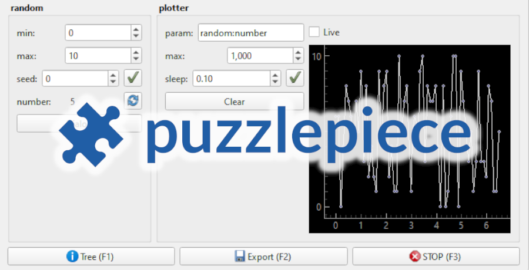
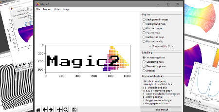
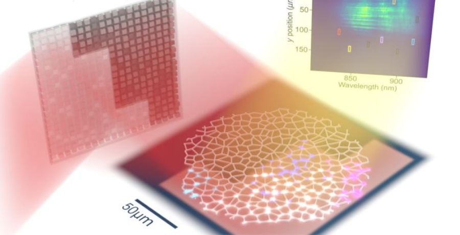
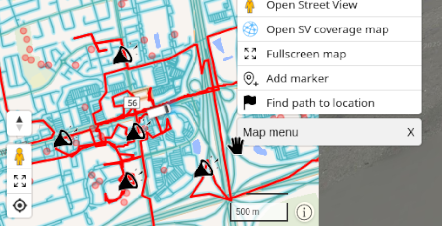
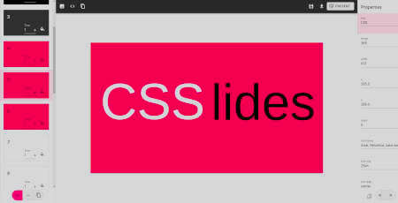
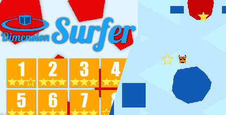
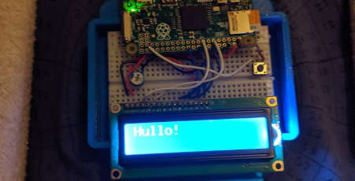
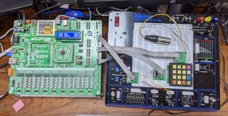
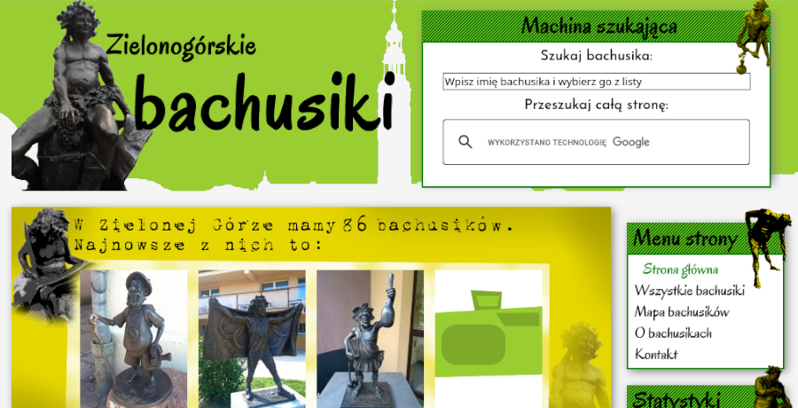
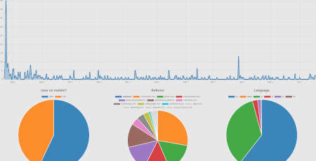

puzzlepiece
A GUI-forward Python framework for automating experimental setups - generates GUI components and a standardised API to make setup automation less unwieldy.
Documentation

Magic2
A Python-based GUI application for interpolating and analysing interferometry data. Created during an internship with the Plasma Physics group at Imperial College London.
GitHub
WikiTranslator
A translation engine for words and phrases that uses Wikipedia's linked network of articles to find correct translations for complicated and scientific terms.
GitHub Visit

PhD Thesis
"On-chip III-V semiconductor network lasers for neuromorphic computing" – my work on neuromorphic computing at IBM Research Europe – Zurich and Imperial College London.
Read it Template

Internet Roadtrip Scripts
Many userscripts for
the Neal.fun game, mostly focused on custom mapping and navigation tools, and Google Street View interactivity.

CSSlides
Winner in the Best Educational Hack category of IC Hack 2020. A slideshow editor focusing on giving you complete freedom in designing delightful transitions
GitHub Try it

Dimension Surfer
A Python game that showcases the mathematical concept of higher dimensions through a simple platform mechanic with a twist. Used Blender to generate level data.
GitHub

YouDecideWhoIAm
An ID badge based on the Raspberry Pi Zero. In this project it randomly displayed audience submissions, but I've also used this hardware platform for other Pi experiments.
GitHub

DMX Controller
Based on a PIC18 microprocessor with all of the code written in Assembly, this collaborative project outputs DMX (a data format for stage lighting).
GitHub

Bachusiki
A website started in 2012 cataloguing little sculptures across my hometown. Recently upgraded to take advantage of modern PHP and mapping tech, while keeping the old-web charm.
Visit (in Polish)

SimpleWebStats
A very simple, GDPR-compliant web analytics app that gathers the bare minimum of information while respecting the users' privacy.
GitHub
WYD Dictionary
I've created the front end for a dictionary project for the World Youth Days in 2016. It interfaced with a SQLite database to provide browsing, searching, and submitting capabilities.
GitHub Visit